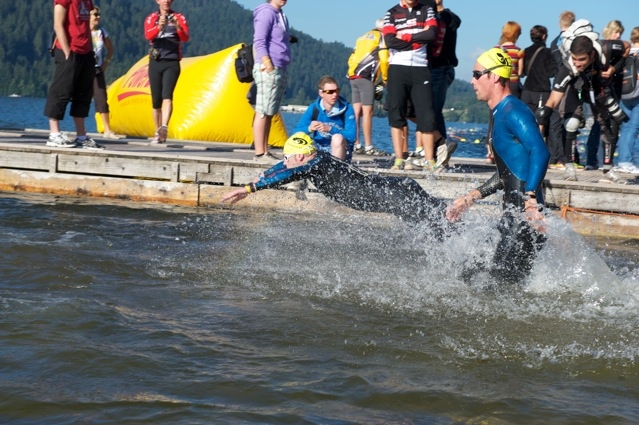

Zaterdag 4 september namen enkele clubgenoten deel aan de lange afstandswedstrijd in de Franse Vogezen. In Gerardmer stonden ruim 1000 atleten aan de start. Roos, Stephaene, Timothy en teamcoach Tim stonden er aan de start. Timothy waagde zich aan een verslag:
Enkele weken geleden besloot ik, op aanraden van Tim, me in te schrijven voor de halve triatlon van Gerardmer (1.9/94/22) op 4 september. In een stralend najaarszonnetje kwam ik vrijdagmiddag aan in het Vogezendorpje, bekend om zijn prachtig bergmeer.
Na mezelf geregistreerd te hebben, vertrok ik richting chalet, waar ik zou verblijven met twee Ironmanagers (Patrick en Jules), twee 12BO4’ers (Fredje en Tomas) en één ‘onafhankelijke’ (Lieven), allemaal ex-piloten van het ter ziele gegane Sabena. Na het treffen van de passende voorbereidingen werd er afgesproken met de andere Ironmanagers en SMO’ers Stephane en Roos in het Hotel La Réserve, om daar een uitgebreide-koolhydraatrijke maaltijd te nuttigen. Ikzelf had het parcours niet kunnen verkennen en werd een beetje bang gemaakt door de anderen. Daarbij kwam dat ik zowel tijdrit- als koersfiets meegebracht had, maar geen van de twee volledig geschikt bleek voor het parcours. Uiteindelijk liet ik het allemaal over me heen gaan en ben ik als een blok in slaap gevallen. De anderen hadden blijkbaar meer zenuwen, want de sanitaire voorzieningen in de chalet hebben die nacht duidelijk hun nut bewezen.
Zaterdagmorgen bleek de zon alweer van de partij, waardoor ik er zin in begon te krijgen. Na het nuttigen van de gebruikelijke pannenkoekjes en havermoutpap werden de banden opgepompt en alles aan een laatste controle onderworpen. De zwemstart was hetgeen me het meeste schrik inboezemde. Op een stukje van 50 m breed, bezaaid met grote stenen, moesten 1200 atleten tegelijk het water in. Voor de start kwam Faris El-Sultan (winnaar Hawai enkele jaren geleden en Regensburg dit jaar) z’n wetsuit aantrekken net naast de 3-koppige 3Kant delegatie.
Stephane en ikzelf hadden de goeie keuze gemaakt om gans rechts op de eerste rij te starten. De elite atleten en snelste zwemmers startten links (kortste afstand), waardoor we dus niet echt moesten vechten voor ons plaatsje. Bij het zwemmen had ik niet zo ’n goed gevoel, maar blijkbaar is dit geen referentie want toen ik mijn wisselspullen genomen had bleek de veel snellere Stephane pas in de wisseltent aangekomen. Toen kwam ik echter tot de ontdekking dat ik de verkeerde zak van de haak gehaald had, waardoor ik terug moest om de juiste zak te zoeken. Bleek dat ik mijn zakken bij nummer 1064 gehangen had, terwijl ikzelf nummer 1164 had! Gelukkig had nummer 1064 mijn zakken ernaast op de grond gesmeten, waardoor ik mijn zakken vrijwel direct terugvond.. Ik bleef vrij rustig (elke wedstrijd bega ik wel één of andere stommiteit) en kon ik ontspannen de fietstocht aanvangen. Daar zag ik al vrij vlug Stephane voor mij uitrijden op de eerste zware helling van de dag. K had mezelf ingeprent om niet te vlug van stapel te lopen en mijn eigen tempo te rijden, daarom heb ik niet gepoogd om het gaatje toe te rijden. Vervolgens zag ik tot mijn grote verwondering Tim stilstaan en aan z’n achterwiel prutsen. Na de tweede helling verloor ik zowel Stephane als Tim uit het oog vermits zij veel betere dalers zijn en meer vertrouwen hadden in de afdaling door de parcoursverkenning. Jammer genoeg stond Tim daarna terug aan de kant met een slepend achterwiel, waardoor hij besliste om samen met zijn poulain Roos de wedstrijd verder af te haspelen (hopelijk was het met wederzijdse toestemming?).
Doseren in de mate van het mogelijke was voor mij de boodschap, het parcours bleek veel lastiger dan ik mezelf voorgesteld had! Bijzonder blij was ik dan ook toen ik de wisselzone voor de tweede keer mocht binnenkomen. Mijn tweede wissel liet spijtig genoeg terug de wensen over. Ik had immers mijn helm al uitgedaan bij de fiets, terwijl hij pas in de wisseltent mocht worden afgezet (net als de verkenning had ik de briefing op vrijdagmorgen niet kunnen bijwonen). Bij het begin van het lopen deed mijn maag eventjes moeilijk, daarom was voluit gaan niet echt mogelijk. Na 4 km stopten de ongemakken in mijn buik, waardoor ik mijn loopbenen enigszins terugvond. Uiteindelijk zag ik bij het kruisen Stephane die enkele minuten voor mij van de fiets was gekomen. Toen ik hem de tweede ronde niet opmerkte op hetzelfde punt dacht ik dat hij verder van mij was weggelopen wat heel sterk was vermits ik toch aan een heel wat betere tweede ronde bezig was (had bijna Sophie De Groote ingehaald en liep ongeveer even rap als Sylvain Denis die me dubbelde).
Verrast was ik dan ook toen hij de derde ronde ineens achter mij opdook en me in het passeren vertelde dat hij buikkrampen had. Daar kreeg ik ook Roos (met vaste begeleider Tim) in de gaten die getekend door de inspanning alles gaf wat ze in haar had. Uiteindelijk bleken die laatste loopkilometers bij iedereen zwaar door te wegen, ondanks het prachtige uitzicht over het meer! Uiteindelijk kwam er na 5u23 voor mij een eind aan al dat lijden. Twee minuten later kwam Stephane na een betere laatste loopronde toch wel vrij fris over de meet (hoopgevend voor Barcelona!). Roos toonde bijzonder veel karakter door juist onder de 6u te finishen. Een heel sterke prestatie voor een eerste triatlonjaar!
Uiteindelijk zijn alle 3Kanters, Ironmanagers en 12BO4’ers allemaal goed aangekomen; toch wel respect voor de gasten uit Oostende die direct na de aankomst hun waterhuishouding op peil brachten met enkele frisse pintjes!
Van de overige Belgen waren er sterke prestaties van Yvon Verkoyen van 3Kant (2e in zijn age group, 30 min. beter dan vorig jaar: wat het laten schieten van de Zwintriatlon niet kan doen!) en de onverslijtbare Francoise Wellekens, die haar age group won! Uitslagen kan je hier bestuderen.
’s Avonds werd er in de chalet een fles champagne gekraakt door de twee debutanten op de halve afstand. Na enkele sterke wedstrijdverhalen, een grote Filet Pure en een bezoekje aan de plaatselijke kermis zochten de meeste deelnemers toch wel uitgeput hun slaapplaats op om de zondag aan de lange terugrit naar België te beginnen!
Kortom: een tof weekend met veel Belgen, goeie organisatie, mooi parcours en schitterend weer!